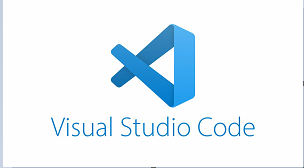
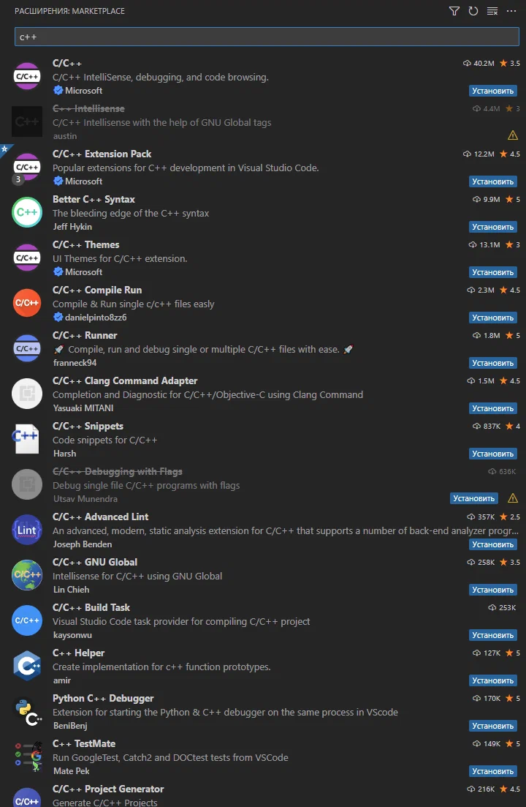
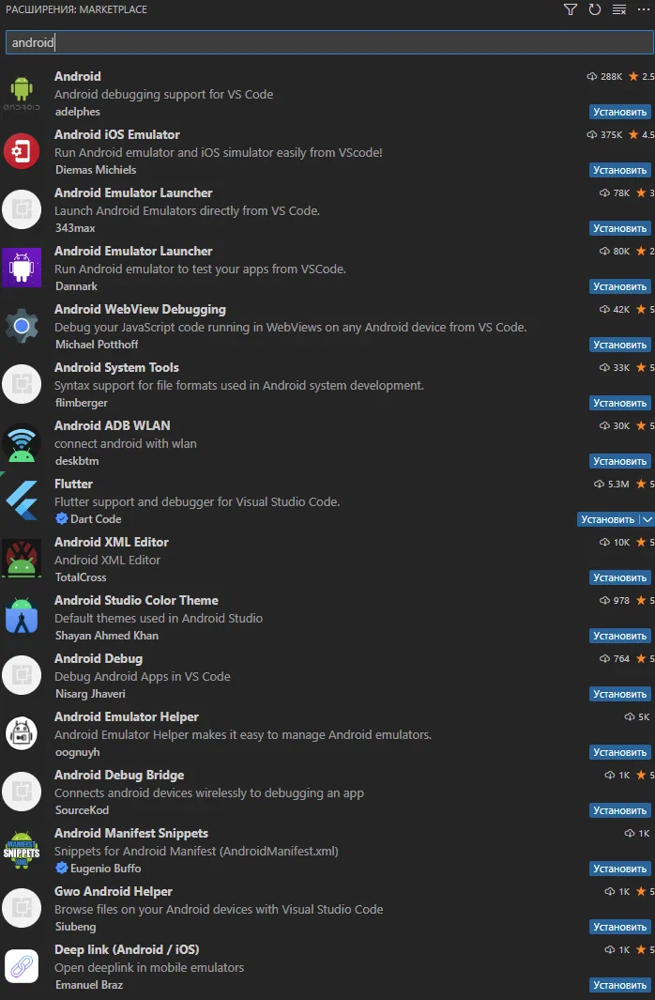
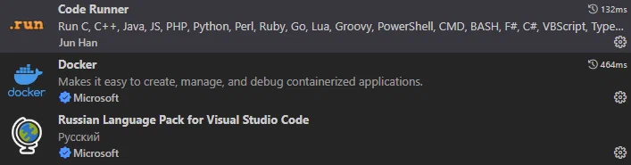

| Тема 3. Кросс платформенная среда разработки Visual Studio Code. | ||
| Назад | ||
|
Visual Studio Code - это современная кросс платформенная и интегрированная среда разработки от Microsoft созданная на основе Electron и NodeJS. Visual Studio Code - это легкий, но мощный редактор исходного кода, который работает на рабочем столе и доступен для Windows, macOS и Linux. Он поставляется со встроенной поддержкой JavaScript, TypeScript и Node.js и имеет богатую экосистему расширений для других языков и сред выполнения (таких как C ++, C#, Java, Python, PHP, Go, .NET).
 Возможности платформы:
Расширения и поддерживаемые языки

 Список расширений достаточно большой, тут и поддержка Docker, Kebernetes и языки программирования, с различными библиотеками, Пример: В качестве редактора кода советую расширение Code Runner  Расширения Сочетание клавиш: Ctrl + Shift + X Найти расширения В магазине VS Code Marketplace. Выполните поиск нужного вам расширения в поисковой строке, где выведется список. Установка расширений В списке представления Расширений можно выполнить поиск и воспользоваться фильтрацией, в блоке каждого расширения есть кнопка установить. Поддерживаемые языки программирования: C++ - C# - CSS - Dart - Dockerfile - F# - Go - HTML - Java - JavaScript - JSON - Julia - Less - Markdown - PHP - PowerShell - Python - R - Rust - SCSS - T-SQL - TypeScript. |
||
| Конспект подготовлен Бакулиным А. М. 2022 год. | ||